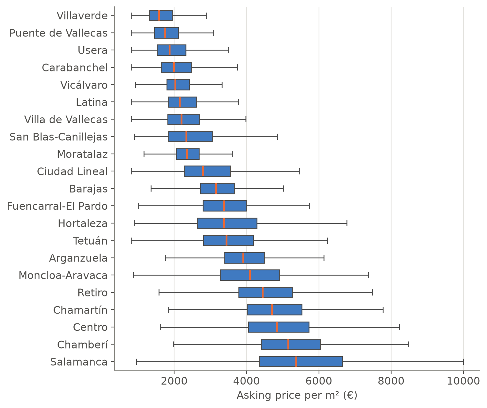

listings = pl.read_csv("data/processed/idealista/madrid_listings_2018.csv").select(
"listing_id", "district", "zone", "condition",
"price", "price_m2", "area_m2", "bedrooms", "bathrooms",
"floor", "lift", "terrace", "construction_year", "dist_centre_km",
)2.3 Dispersion, shape and outliers
Two variables can have the same centre and very different variability. This part measures the spread and the shape of a distribution, and introduces the boxplot and the detection of outliers. We continue with the Madrid listings.
Measures of dispersion
Definition 1 (Measures of dispersion)
- Range: \(R = x_{(n)} - x_{(1)}\).
- Variance: \(\displaystyle s^2 = \frac{1}{n}\sum_{i=1}^{n}(x_i - \bar{x})^2\), the mean of the squared deviations from the mean.
- Standard deviation: \(s = \sqrt{s^2}\), in the same units as the data.
- Corrected (sample) variance: \(\displaystyle \hat{s}^2 = \frac{1}{n-1}\sum_{i=1}^{n}(x_i - \bar{x})^2 = \frac{n}{n-1}\,s^2\). It is the version used in statistical inference.
- Interquartile range: \(IQR = Q_{0.75} - Q_{0.25}\), the width of the central half of the data.
- Median absolute deviation: \(MAD = \text{median}_i\,|x_i - Me|\).
- Coefficient of variation, for positive variables: \(CV = s / \bar{x}\).
The variance, the standard deviation and the range depend on every observation; the interquartile range and the MAD, like the median, ignore the extremes.
x = pl.col("price")
listings.select(
range=x.max() - x.min(),
variance=x.var(ddof=0),
std_dev=x.std(ddof=0),
IQR=x.quantile(0.75, "linear") - x.quantile(0.25, "linear"),
MAD=(x - x.median()).abs().median(),
CV=x.std(ddof=0) / x.mean(),
)| range | variance | std_dev | IQR | MAD | CV |
|---|---|---|---|---|---|
| 8,112,000.0 | 170,079,231,502.8 | 412,406.6 | 299,000.0 | 121,000.0 | 1.060 |
The variance is a huge number, in euros squared, which is why we report the standard deviation: asking prices are typically about 412,000 € away from their mean, a spread larger than the mean itself (\(CV > 1\)). The central half of the listings, however, lies in an interval of about 300,000 €.
ImportantWatch out for
ddof
Polars (like pandas, R and Excel’s STDEV) computes the corrected variance by default, dividing by \(n - 1\). To obtain \(s^2\) as defined above we need ddof=0. With 75,735 listings the difference is negligible, but with small samples it is not (exercise 4).
Properties of the variance
Proposition 1 (Computational formula) \(\displaystyle s^2 = \frac1n\sum_{i=1}^n x_i^2 - \bar x^2\), the mean of the squares minus the square of the mean. In particular \(\frac1n\sum_i x_i^2 \ge \bar x^2\).
Proof. Take \(c = 0\) in the least-squares property of the mean (part 2): \(\sum_i x_i^2 = \sum_i (x_i - \bar x)^2 + n\bar x^2\). Divide by \(n\) and rearrange.
The formula is convenient by hand and for grouped data, \(s^2 \approx \sum_i f_i x_i^2 - \big(\sum_i f_i x_i\big)^2\) with the class marks \(x_i\). On a computer it should be avoided when the mean is large compared with the standard deviation: it subtracts two huge, almost equal numbers, and loses precision.
The standard deviation is a “typical” distance to the mean. The next result makes this precise: few observations can be many standard deviations away from the mean.
Proposition 2 (Chebyshev’s inequality (for data)) For any data with \(s > 0\) and any \(k > 0\), the proportion of observations with \(|x_i - \bar x| \ge k s\) is at most \(1/k^2\). Equivalently, at least \(1 - 1/k^2\) of the observations lie in the interval \((\bar x - ks, \bar x + ks)\).
Proof. Let \(A = \{i : |x_i - \bar x| \ge ks\}\) and \(m = \#A\). Each \(i \in A\) contributes at least \(k^2 s^2\) to the sum of squared deviations, and the other terms are non-negative, so \[ n s^2 = \sum_{i=1}^n (x_i - \bar x)^2 \ge \sum_{i \in A}(x_i - \bar x)^2 \ge m\,k^2 s^2 . \] Dividing by \(n k^2 s^2\) gives \(m / n \le 1/k^2\).
mean, sd = listings.select(m=pl.col("price").mean(), s=pl.col("price").std(ddof=0)).row(0)
pl.DataFrame([
{"k": k,
"proportion beyond k s": (listings["price"] - mean).abs().ge(k * sd).mean(),
"Chebyshev bound 1/k^2": 1 / k**2}
for k in [1.5, 2, 3, 5]
])| k | proportion beyond k s | Chebyshev bound 1/k^2 |
|---|---|---|
| 1.500 | 0.058 | 0.444 |
| 2.000 | 0.043 | 0.250 |
| 3.000 | 0.022 | 0.111 |
| 5.000 | 0.007 | 0.040 |
The bound holds for any data, whatever its shape, and is therefore conservative: for the prices, the proportions are well below it. For bell-shaped data the “68–95–99.7 rule” of the normal distribution is much sharper, but it requires that shape.
NoteHistorical note: Bienaymé and Chebyshev
The inequality was proved by Irénée-Jules Bienaymé in 1853 and, independently and with a more general argument, by Pafnuty Chebyshev in 1867, who used it to give a simple proof of the law of large numbers. It is the first example of a statistical result that holds without assumptions on the shape of the distribution.
The coefficient of variation
The coefficient of variation has no units, so it compares the spread of variables measured in different units: the price (€), the floor area (m²) and the price per m² (€/m²):
cols = ["price", "area_m2", "price_m2"]
listings.select(pl.col(cols).std(ddof=0) / pl.col(cols).mean())| price | area_m2 | price_m2 |
|---|---|---|
| 1.060 | 0.663 | 0.470 |
Total prices are relatively much more dispersed than prices per square metre. A large part of the differences in price comes from the size of the dwellings: dividing by the area removes it, and what remains (mostly location and quality) varies less. This is why property markets are compared with the price per m².
Variance within and between groups
How much of the variability of the price per m² is due to the district? The answer is a decomposition of the variance, the descriptive core of the analysis of variance.
Proposition 3 (Decomposition of the variance) If the observations are divided into \(G\) groups with sizes \(n_g\), means \(\bar x_g\) and variances \(s_g^2\), then \[ s^2 = \underbrace{\sum_{g=1}^G \frac{n_g}{n}\, s_g^2}_{\text{within groups}} \;+\; \underbrace{\sum_{g=1}^G \frac{n_g}{n}\,(\bar x_g - \bar x)^2}_{\text{between groups}} . \]
Proof. Apply the least-squares property of the mean (part 2 of the proposition in part 2) to the observations of group \(g\) with \(c = \bar x\): \(\sum_{i \in g}(x_i - \bar x)^2 = n_g s_g^2 + n_g(\bar x_g - \bar x)^2\). Adding over the groups gives \(n s^2\) on the left; divide by \(n\).
The ratio \(\eta^2 = (\text{between}) / s^2 \in [0, 1]\) is the proportion of the variance explained by the groups: it is 1 if all the observations of each group are equal, and 0 if all the groups have the same mean.
overall_mean, overall_var = listings.select(
m=pl.col("price_m2").mean(), v=pl.col("price_m2").var(ddof=0)
).row(0)
groups = listings.group_by("district").agg(
n_g=pl.len(), mean_g=pl.col("price_m2").mean(), var_g=pl.col("price_m2").var(ddof=0)
)
n = listings.height
within = (groups["n_g"] * groups["var_g"]).sum() / n
between = (groups["n_g"] * (groups["mean_g"] - overall_mean) ** 2).sum() / n
print(f"total variance : {overall_var:,.0f}")
print(f"within + between: {within:,.0f} + {between:,.0f} = {within + between:,.0f}")
print(f"eta^2 (share explained by the district): {between / overall_var:.2f}")total variance : 2,925,561
within + between: 1,197,123 + 1,728,438 = 2,925,561
eta^2 (share explained by the district): 0.59The district alone accounts for almost 60 % of the variance of the price per m². The rest is variation between dwellings of the same district: their exact location, size, condition and quality.
Measures of shape
Definition 2 (Skewness and kurtosis)
- Skewness coefficient: \(\displaystyle g_1 = \frac{\frac{1}{n}\sum (x_i-\bar{x})^3}{s^3}\). It is 0 for symmetric data, positive for a long tail to the right and negative for a long tail to the left.
- Quartile (Bowley) skewness: \(\displaystyle \frac{(Q_{0.75} - Me) - (Me - Q_{0.25})}{Q_{0.75} - Q_{0.25}} \in [-1, 1]\), which compares the two halves of the box and is not affected by the extremes.
- Excess kurtosis: \(\displaystyle g_2 = \frac{\frac{1}{n}\sum (x_i-\bar{x})^4}{s^4} - 3\). It compares the weight of the tails with that of the normal distribution, for which \(g_2 = 0\).
All three are invariant to changes of units (exercise 6): they describe the shape, not the location or the scale.
q1, me, q3 = [listings["price"].quantile(p, "linear") for p in (0.25, 0.5, 0.75)]
listings.select(
skewness=pl.col("price").skew(),
bowley=pl.lit((q3 - me - (me - q1)) / (q3 - q1)),
kurtosis=pl.col("price").kurtosis(), # already subtracts 3
)| skewness | bowley | kurtosis |
|---|---|---|
| 4.074 | 0.331 | 29.472 |
Both skewness measures are positive. The kurtosis is very large: there are far more extremely expensive dwellings than a bell-shaped distribution would have.
Boxplot and outliers
The boxplot summarises in one graph the median, the quartiles and the possible outliers:
- The box goes from \(Q_{0.25}\) to \(Q_{0.75}\), and the line inside it marks the median.
- The fences are \(LF = Q_{0.25} - 1.5 \cdot IQR\) and \(UF = Q_{0.75} + 1.5 \cdot IQR\), and the “whiskers” reach the most extreme observations within them.
- Observations outside \([LF, UF]\) are drawn one by one as outliers.
Boxplots are especially useful for comparing groups:
order = (
listings.group_by("district")
.agg(median=pl.col("price_m2").median())
.sort("median")["district"]
.to_list()
)
fig, ax = plt.subplots(figsize=(7, 7))
sns.boxplot(x=listings["price_m2"].to_numpy(), y=listings["district"].to_numpy(),
order=order, color=COLORS["blue"], showfliers=False, width=0.6,
medianprops=dict(color=COLORS["orange"], linewidth=2), ax=ax)
ax.set_xlabel("Asking price per m² (€)")
ax.set_ylabel("")
ax.grid(axis="x"); ax.grid(axis="y", visible=False)
plt.show()
The median price per m² in Salamanca is more than three times that of Villaverde, and the central districts occupy the top of the graph. The boxes also show what the decomposition of the variance measured: the spread within each district is large (the box of Salamanca spans about 2,300 €/m²).
NoteHistorical note: Tukey’s box-and-whisker plot
John Tukey introduced the box-and-whisker plot as part of his exploratory data analysis (Tukey 1977). He wanted graphs that could be drawn by hand and were not distorted by outliers, which is why the box is built from quartiles and not from the mean and the standard deviation. The 1.5 × IQR rule was his practical choice (McGill et al. 1978).
iqr = q3 - q1
lf, uf = q1 - 1.5 * iqr, q3 + 1.5 * iqr
outliers = listings.filter(~pl.col("price").is_between(lf, uf))
print(f"Fences: [{lf:,.0f}, {uf:,.0f}] € · outliers: {outliers.height:,} "
f"({outliers.height / listings.height:.1%} of the listings)")Fences: [-291,500, 904,500] € · outliers: 5,512 (7.3% of the listings)The lower fence is negative, so prices can only have outliers at the top, as is usual in right-skewed distributions.
WarningAn outlier is not necessarily an error
An outlier may be an error (the dwelling with 93 bedrooms of part 1), but it may also be a genuinely expensive dwelling. In a right-skewed distribution the 1.5 × IQR rule flags many valid observations, here about one listing in fourteen. Before removing an observation we have to understand why it is outlying.
Linear transformations and standardisation
Proposition 4 (Linear transformations) If \(y_i = a + b\,x_i\), then \(\bar{y} = a + b\,\bar{x}\), \(s_y^2 = b^2 s_x^2\) and \(s_y = |b|\, s_x\). If moreover \(b > 0\), every quantile satisfies \(Q_p(y) = a + b\,Q_p(x)\).
Proof. \(\bar y = \frac1n\sum_i (a + bx_i) = a + b\bar x\). Then \(y_i - \bar y = b(x_i - \bar x)\), so \(s_y^2 = \frac1n\sum_i b^2(x_i-\bar x)^2 = b^2s_x^2\). The statement on quantiles is the result on monotone transformations of part 2, with the increasing function \(g(x) = a + bx\).
Adding a constant moves the centre but not the spread; multiplying by a constant multiplies both. A special case is standardisation, \[ z_i = \frac{x_i - \bar{x}}{s_x}, \quad\text{that is,}\quad a = -\frac{\bar x}{s_x},\ b = \frac1{s_x}, \] which by Proposition 4 gives \(\bar z = 0\) and \(s_z = 1\). The value \(z_i\) says how many standard deviations observation \(i\) is above or below the mean, and allows comparing observations of different variables. Is a flat of 150 m² more unusual in size than a flat of 600,000 € is in price?
def z_score(column: str, value: float) -> float:
x = listings[column]
return (value - x.mean()) / x.std(ddof=0)
def percentile_rank(column: str, value: float) -> float:
return (listings[column] <= value).mean()
for column, value in [("area_m2", 150), ("price", 600_000)]:
print(f"{column:>8} = {value:>7,}: z = {z_score(column, value):.2f}, "
f"F_n = {percentile_rank(column, value):.3f}") area_m2 = 150: z = 0.75, F_n = 0.871
price = 600,000: z = 0.51, F_n = 0.835Both measures agree that the flat of 150 m² is the more unusual one, but they say it differently: \(z\) measures distances in standard deviations, and \(F_n\) the proportion of listings below. With skewed variables the second is easier to interpret.
Summary of the topic
| Type of variable | Tables | Graphs | Measures |
|---|---|---|---|
| Qualitative nominal | \(n_i\), \(f_i\) | Bar chart | Mode |
| Qualitative ordinal | \(n_i\), \(f_i\), \(N_i\), \(F_i\) | Bar chart | Mode, median, quantiles |
| Quantitative discrete | \(n_i\), \(f_i\), \(N_i\), \(F_i\) | Bar chart, \(F_n\) | All |
| Quantitative continuous | By classes | Histogram, \(F_n\), boxplot | All |
The exercises for this topic are in part 4.
References
McGill, Robert, John W. Tukey, and Wayne A. Larsen. 1978. “Variations of Box Plots.” The American Statistician 32 (1): 12–16.
Tukey, John W. 1977. Exploratory Data Analysis. Addison-Wesley.